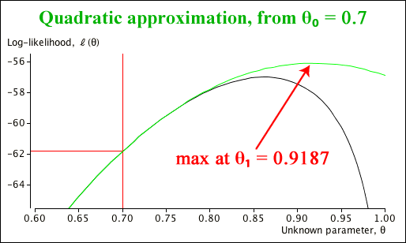

To illustrate the use of the Newton-Raphson algorithm to find maximum likelihood estimates, we will examine another standard distribution that is occasionally encountered, the log-series distribution.
Definition
A discrete random variable \(X\) is said to have a log-series distribution if its probability function is
\[
p(x) \;=\; \frac {-1} {\log(1-\theta)} \times \frac {\theta^x} x \quad\quad \text{for } x=1, 2, \dots
\]
where \(0 \lt \theta \lt 1\).
Its shape to the geometric distribution, but has greater spread with a higher probability at one and a longer tail.
Maximum likelihood
If a random sample \({x_1, x_2, \dots, x_n}\) is collected from this distribution, what is the maximum likelihood estimate of \(\theta\)? The logarithm of the probability function is
\[
\log \left(p(x)\right) \;=\; x \log(\theta) - \log \left(- \log(1 - \theta) \right) - \log(x)
\]
so the likelihood function is
\[
\ell(\theta) \;=\; \sum_{i=1}^n \log \left(p(x_i)\right) \;=\; {\sum x_i} \log(\theta) - n \times \log \left( -\log(1 - \theta) \right) + K
\]
where \(K\) is a constant whose value does not depend on \(\theta\). The MLE is the solution of
\[
\ell'(\theta) \;=\; \frac {\sum x_i} {\theta} + \frac n {(1 - \theta)\log(1 - \theta)} \;=\; 0
\]
Unfortunately this equation cannot be rearranged to obtain an explicit formula for \(\theta\), so a numerical method must be used to find the maximum likelihood estimate. The Newton Raphson algorithm also requires the second derivative of the log-likelihood,
\[
\ell''(\theta) \;=\; -\frac {\sum x_i} {\theta^2} + \frac {n \left(1 + \log(1 - \theta) \right)} {(1 - \theta)^2\log^2(1 - \theta)}
\]
The algorithm uses these derivatives iteratively to refine an initial estimate, \(\theta_0\),
\[
\theta_{i+1} \;\; = \;\; \theta_i - \frac {\ell'(\theta_i)} { \ell''(\theta_i)}\]
Numerical illustration
Consider the following data set that is assumed to arise from a log-series distribution.
| 3 |
5 |
1 |
4 |
8 |
10 |
2 |
1 |
1 |
2 |
| 1 |
8 |
1 |
6 |
13 |
1 |
6 |
2 |
1 |
3 |
| 1 |
1 |
1 |
2 |
1 |
6 |
1 |
1 |
1 |
1 |
The derivatives of the log-likelihood involve the values \(n = 30\) and \(\sum x = 95\). Iterations of the Newton-Raphson algorithm from an initial guess at the value of \(\theta = 0.7\) are:
| Iteration, i | \(\theta_i\) | \(\ell'(\theta_i)\) | \(\ell''(\theta_i)\) |
| 0 | 0.7000 | 52.656 | -240.78 |
| 1 | 0.9187 | -43.613 | -1200.14 |
| 2 | 0.8823 | -11.484 | -661.52 |
| 3 | 0.8650 | -1.139 | -538.41 |
| 4 | 0.8629 | -0.013 | -526.41 |
| 5 | 0.8628 | -0.000 | -526.28 |
| 6 | 0.8628 | -0.000 | -526.28 |
| 7 | 0.8628 | | |
It converges quickly to \(\hat {\theta} = 0.8628\).
The diagram below illustrates the first iteration of the algorithm; it approximates the shape of the log-likelihood using a quadratic curve with the same value, slope and curvature as the log-likelihood at \(\theta = 0.7\). The next iteration is the value of \(\theta\) that maximises this quadratic.

When you get closer to the MLE, the quadratic's shape becomes closer to the actual log-likelihood, so the iterations approach the MLE more quickly. The diagram below illustrates this from a starting value of 0.88.